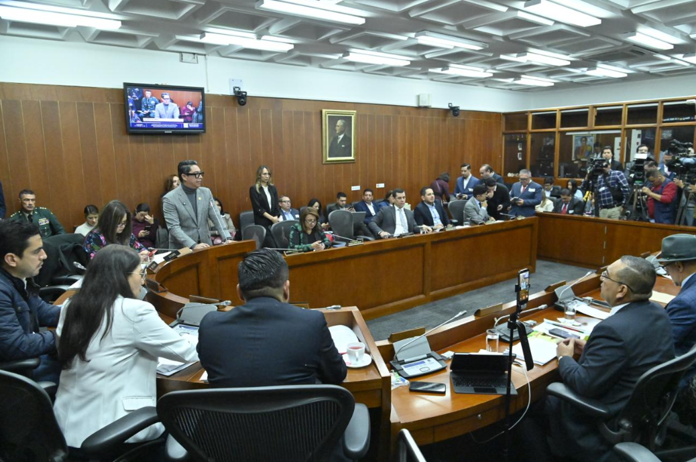
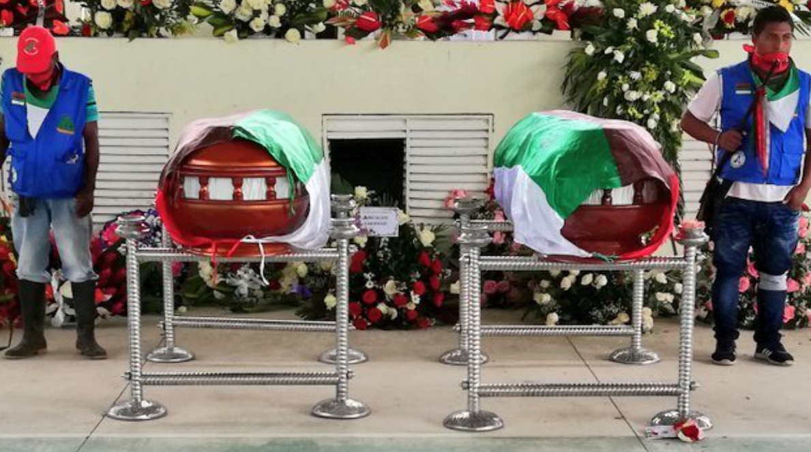
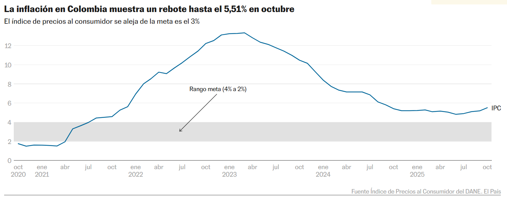

Política Nacional
Elecciones presidenciales 2026: Colombia elige nuevo presidente el 31 de mayo
Colombia se prepara para unas elecciones presidenciales en un momento de transición. La ONU, a través de su Misión de Verificación, conformó un equipo de 86 observadores para garantizar el proceso. El representante especial de la ONU advirtió sobre amenazas recibidas por candidatos presidenciales, llamando a las autoridades a garantizar la seguridad de todos los participantes. Quien asuma la presidencia en agosto enfrentará el desafío de consolidar la paz en regiones aún afectadas por el conflicto armado.
23 abr. 2026 · Fuente: ONU / Semana

Defensa
Senado debate el accidente del avión Hércules C-130 de las FFMM
La Comisión Sexta del Senado convocó debate de control político para examinar causas del accidente. Congresistas cuestionaron la crisis de mantenimiento de las aeronaves militares colombianas.
8 abr. 2026 · Senado.gov.co

Derechos humanos
972 asesinatos de defensores de DDHH entre 2016 y 2025
La ONU alerta que Colombia sigue siendo uno de los lugares más peligrosos del mundo para quienes defienden los derechos humanos. La violencia está ligada al narcotráfico, minería y tala ilegal.
19 mar. 2026 · ONU
